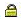
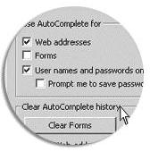

- Digi Purse
- Branch IMPS
- Mobile Passbook
- ATMs
- Talking ATMs
- Remittance @ATMs
-
Internet Banking

-
Mobile Banking
- SMS Banking
- Kisan ATM
- Self ATM PIN Generation through IVR
ONLINE SECURITY
(Tips to improve your protection while banking online )
Union Bank of India has gone to extraordinary lengths to ensure that your online transactions are secure, by placing its devises in most secured environment as evidenced by the digital certificate issued by "VERISIGN".
However, as a customer, if you follow few simple security practices as detailed below, it will go a long way in ensuring maximum security to your transactions.
-
1. General Security
- Digital Certificate from Verisign
Above symbol is found on the index page of the Internet banking website of the Bank which guarantees that you are dealing with a secure website.
-
Also look for the  symbol on the bottom bar of the browser in Internet banking logon screen to ensure that the site is running in secure mode before you enter sensitive information. Clicking on the lock will allow you to see the Verisign Certificate authenticating the site. Please check it every time you do Internet Banking.
- Log off after completing your transactions every time. Do not just close your browser.
- Avoid online banking from a shared computer or cyber cafes. If this cannot be avoided, please change your password once you come back to your personal computer.
- Log on regularly to monitor your transactions and verify transaction history. Further, while logging on, make it a point to verify the date and time of your last log.
- Get your PC updated with operating system and browser patches.
- Ensure that your PC is loaded with updated anti virus software.
- Use anti spy ware/ windows defender.
- Use personal firewall available in Windows XP.
- Digital Certificate from Verisign
-
2. Password Security
-
Keep your Passwords confidential. Do not use guessable passwords like your name, place, birthdays, etc. Use alphanumeric passwords, preferably with some special characters such as #, $, %. *.
-
Change your password regularly.
-
Never fill e-mail with input fields that ask you for sensitive data such as User ID, Passwords, PINs, ATM and account number information.
-
-
3. Browser Security
Although Internet browsers have built-in security, small Internet files are downloaded to your computer whenever you are online.Some of the files may pose a security risk. Enhance your security by taking the following actions:
-
Clear your browser's cache and history after each session so that your account information is removed, especially if you are using a shared computer.
-
Use an Internet browser that supports 128-bit encryption.
-
If you use Internet Explorer, configure the browser to not remember passwords by disabling Auto Complete as below:
- Launch your Internet Explorer and click on "Tools">> "Internet Options">> "Content".
- Under "Personal Information", click on "AutoComplete".
- Uncheck "User names and passwords on forms" and click on "Clear Passwords".
- Click "OK"

-
-
4. Navigate Safely
Navigate the Internet safely to reduce the likelihood of online fraud.-
To ensure that you are going to an authentic Union Bank site, type in the entire website address in your browser's address bar instead of clicking on the links provided in mails or third party websites. You can also add the URL to list of favorites for quick and secure access.
-
Beware of pop-up windows that ask for your confidential information such as account number, PIN, passwords etc. Union Bank's Login pages are always on a web page and never in a pop-up window.
-
If you suspect a website is fraudulent, leave the site. Do not follow any of the instructions it may present to you.
-
Phishing/ e-mail/ Online Identity Frauds
Online Identity Fraud also known as "Phishing" occurs when fraudsters pose as trusted organizations and send out thousands of fraudulent e-mails to random e-mail addresses and ask to update/ respond with sensitive personal information such as user Ids, PINs, Passwords etc.
How to differentiate between a genuine e-mail and fraudulent one
-
Union Bank of India frequently communicates with its clients via e-mail. The majority of these communications are to provide customers with product information and updates about the Bank's services. The Bank will never send an e-mail requesting confidential account information.
-
Fraudulent e-mails usually contain a link to a look-alike website to mislead into entering sensitive financial information such as account number, User ID, Internet Banking Password etc. This will enable the fraudsters to capture the account information to access the customer's bank accounts.
How to tackle the problem
-
The Bank will never send you urgent or time-sensitive e-mails that ask you to provide, update or confirm sensitive data like your Credit Card number or Internet Banking User ID, Password etc. Delete such e-mails even if they appear to have come from Union Bank of India.
-
If the link from e-mail goes to a login page or a pop-up window, do not follow it and part with your account information. Always type in the entire website address (http://www.unionbankonline.co.in) to access the Bank's websites. You can add the above address to favorites/ bookmark for easy and secure access.
-
Check the sender e-mail address to verify that it is from a valid e-mail account. Never open e-mail attachments from sources that cannot be trusted.
-
Always scan e-mail attachments for viruses before opening them. If you are unsure about the source of an attachment, delete it.
-
Be alert for spam e-mails. These are designed to trick you into downloading a virus or jumping to a fraudule not website and disclosing sensitive information.
What you should do in case of e-mail or phishing threats
If you suspect that you have responded to a fraudulent e-mail or believe that some one is trying to commit fraud by sending a mail pretending to be from Union Bank of India, please contact us immediately at:
- phishing@unionbankofindia.com or ebanking@unionbankofindia.com or itsecuritygroup@unionbankofindia.com
- Call on us 1800222244 or
- Inform the nearest branch of Union Bank of India.
Security is a journey, not the destination. Please join us to make this journey safe and secure for all of us.